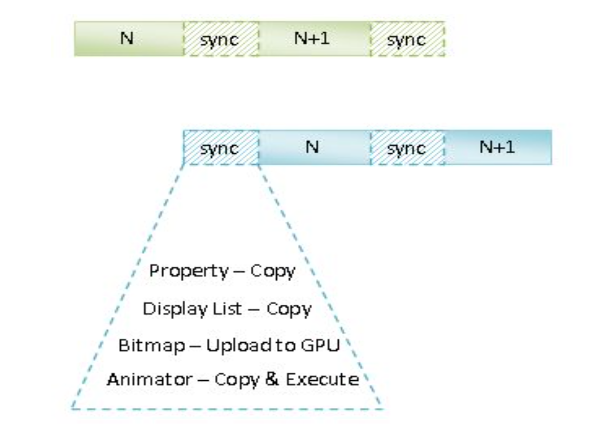

class: center, middle, dark background-image: url() # UI硬件加速渲染 .right.gary_light[[Wang Jie](http://github.com/wangjiegulu)] .middle[[Github](https://github.com/wangjiegulu)] .middle[[Blog](http://www.cnblogs.com/tiantianbyconan)] --- ## 硬件加速渲染步骤 在硬件加速渲染环境中，Android应用程序窗口的UI渲染是分两步进行的： - 构建Display List - 渲染Display List --- ## 构建Display List Android窗口视图是树形结构，因此它们的Display List是从根视图开始构建的， 子视图的Display List包含在父视图的Display List中。 对根视图的Display List进行渲染即可得到Android应用程序窗口的UI. Display List的本质是一个缓冲区，它里面记录了即将要执行的绘制命令序列。 ### Display List好处 - 在绘制窗口的下一帧时，若对比上一帧没有变化，则复用上次构建的Display List即可。 - 在绘制窗口的下一帧时，若对比上一帧，只是位置和透明度等简单属性改变，则直接修改上次一帧Display List的相关属性即可。 软件渲染的子视图不具有Display List，它们先绘制在一个Bitmap上，然后这个Bitmap再记录在父视图的Display List中以后再进行渲染的。 --- ### onDraw()方法 一个View的主要UI是由子类实现的成员函数onDraw绘制的，也就是说Display List构建的过程其实就是View调用onDraw()方法的过程。 onDraw()被调用时，它是不需要区别它是通过硬件渲染还是软件渲染的 - 当使用硬件渲染时，调用Canvas API相当是将API调用记录在一个Display List中 - 而当使用软件渲染时，调用Canvas API相当是将UI绘制在一个Bitmap中。 --- ### OpenGL线程 在Android中，我们是通过Canvas来绘制UI元素的。在硬件加速渲染环境中，Canvas调用最终会转化为Open GL API调用。 在一个Open GL渲染上下文创建的Open GL对象一般来说只能在关联的Open GL线程中操作。这个是为了避免多线程并发引起的冲突问题（Android中UI操作只能在主线程中执行也是同样的道理）。 Android 5.0之前，主线程同时也是一个Open GL线程。但是从Android 5.0之后，Android应用程序的Open GL线程就独立出来了，称为Render Thread --- ### Main Thread与Render Thread Main Thread： - 处理用户输入 - 处理系统消息 - 处理自定义消息 - 构建Display List（onDraw） Render Thread： - 将Display List渲染成UI - 执行动画 --- ### Main Thread与Render Thread同步与异步协作 .center[]